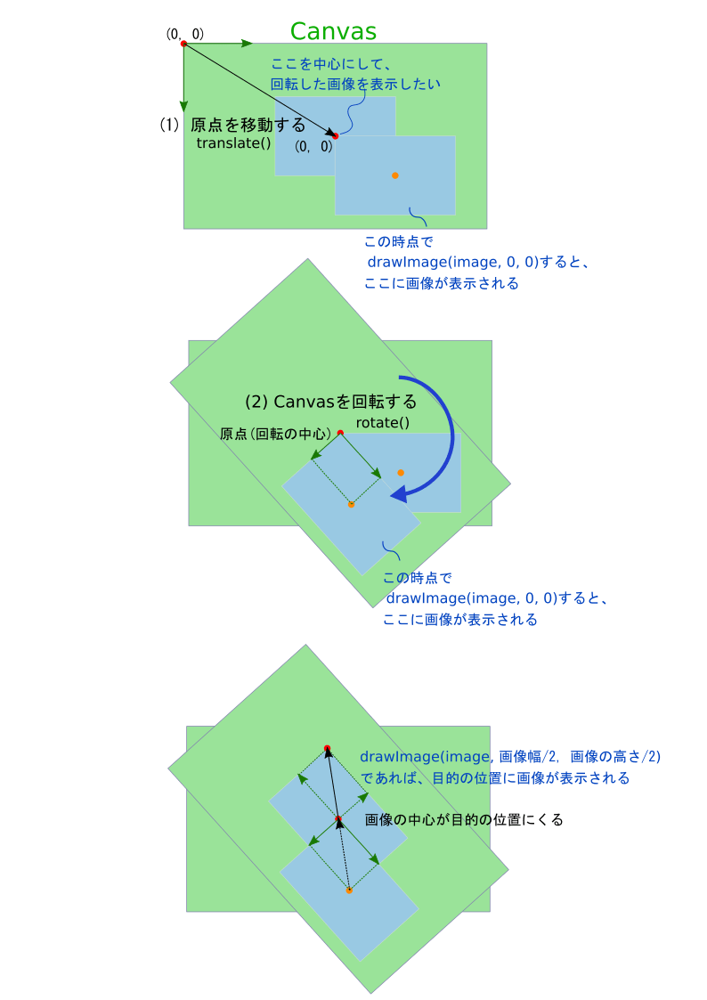

画像の中心で回転させる。
const TO_RADIANS = Math.PI/180;
/**
* 回転させた画像を表示する
* @param {object} image - Imageオブジェクト
* @param {number} x - 画像の中心となるX座標
* @param {number} y - 画像の中心となるY座標
* @param {number} angle - 回転する角度[度]
*/
const drawRotatedImage = (image, x, y, angle) => {
// コンテキストを保存する
context.save();
// 回転の中心に原点を移動する
context.translate(x, y);
// canvasを回転する
context.rotate(angle * TO_RADIANS);
// 画像サイズの半分だけずらして画像を描画する
context.drawImage(image, -(image.width/2), -(image.height/2));
// コンテキストを元に戻す
context.restore();
}「画像を回転した状態で表示する関数」でやっていること。
参考
ソースコードはこちら